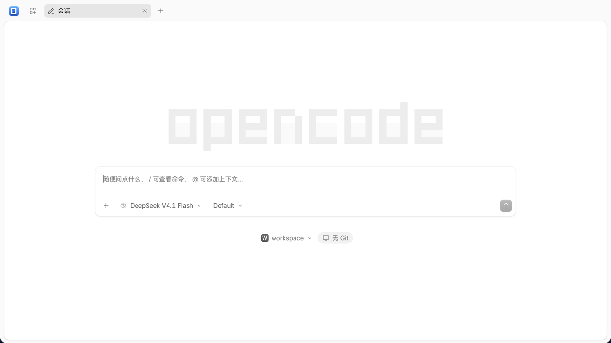
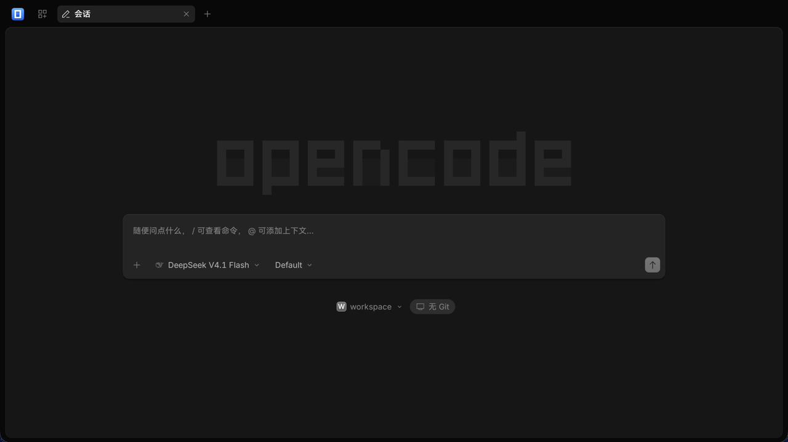

Upstream opencode, zero changes
The official Web UI and agent core run as-is — the project only applies idempotent patches. Whenever opencode ships, the new capabilities come along.
OC Desktop is the desktop form of opencode: Windows, Linux and macOS run the upstream official release, while HarmonyOS (2in1 / tablet) ships as two third-party editions — HarmonyOS Edition (in-process Node + ArkWeb, no Electron) and Electron on HarmonyOS Edition (Electron runtime). The opencode server lives inside the app itself and the official Web UI loads same-origin over a local port — zero upstream changes.
HarmonyOS ships two editions · HarmonyOS Edition v2.0.26 — in-process Node v24.2.0 + ArkWeb, no Electron (built, unsigned; device run pending) · Electron on HarmonyOS Edition v2.0.26 — Electron 37, signed HAP
Windows / Linux / macOS are distributed by upstream opencode (BETA) · downloads and source point at the official channels


OC Desktop · Electron on HarmonyOS Edition (the UI itself is Simplified Chinese) — the shot follows the theme
why OC Desktop
The complete opencode experience, folded into a real desktop app.
The official Web UI and agent core run as-is — the project only applies idempotent patches. Whenever opencode ships, the new capabilities come along.
The server starts inside the app and the UI loads same-origin over a local port. Everything stays on the machine — no CORS, no cloud relay, no account.
A terminal PTY and external processes are unavailable on HarmonyOS, so plain-JS tools override shell / grep / glob instead — the capability lands in the app itself.
Only the permissions it needs — network plus document directories. Window title, UI and icons are unified as OC Desktop instead of the upstream brand.
pick your desktop
One app, four desktop shapes. The one you need is right below.
v2)@fellow99/node-bridge (dlopen + node::Start)127.0.0.1:<random port>node:sqlite) in the app sandbox · credentials never leave the device/api/info + SPA + SSE green · device run pendingv2)shell, grep, glob.deb / .rpm / .AppImagebrew install --cask opencode-desktopOC Desktop is a desktop form built on the open-source project opencode: the Windows / Linux / macOS edition is distributed upstream, while HarmonyOS ships two independent third-party editions — HarmonyOS Edition (in-process Node + ArkWeb, no Electron) and Electron on HarmonyOS Edition (Electron runtime). None is affiliated with the upstream team.
HarmonyOS known limits (both editions): terminal PTY and tools that need external processes (LSP / MCP / git) are unavailable on this platform; installing plugins online is off by default. The HarmonyOS Edition additionally ships no Chromium at all.
how it works
The app starts the opencode server on the device (random port + password).
The renderer (ArkWeb / Chromium) loads the official Web UI embedded in the server.
Credentials and headers, data directories and tool overrides are handled by the shell — the UI needs no changes.
Zero upstream changes · No CORS · No custom protocol · Data stays local